Activity: Create and Simulate a Variable Table Motor
In this activity, you form assembly relationships between a track and a follower that you will use to create a Variable Table Motor. The motor will then be used create an animation using the Simulate Motor command and the animation editor.
In this activity you start with a track assembly and add a track follower part by placing four different assembly relationships between the follower and the track. After the relationships are formed, a Variable Table Motor is defined using a variable associated with one of the assembly relationships. Then the motor is then added to the animation timeline using the Simulate Motor command and animated.
Open the track assembly asmvtmtrack.asm file.
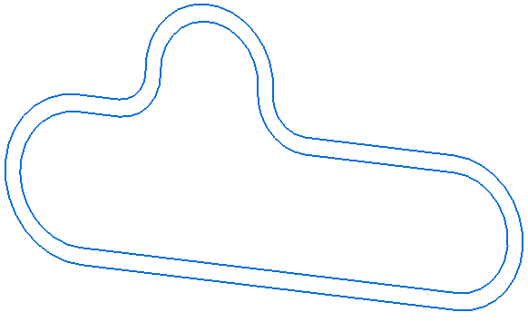
Drag the follower part vtmfollower.par into this position from the Parts Library.
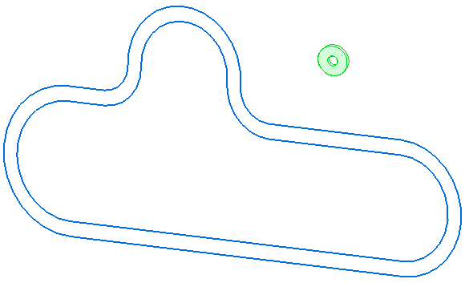
You will place the assembly relationships using sketch geometry.
Right-click anywhere in the graphics window and select the Show/Hide All Component... option.
Select the Show All option for Sketches and the Hide All option for everything else including the Design Body. The graphics window should appear as follows.
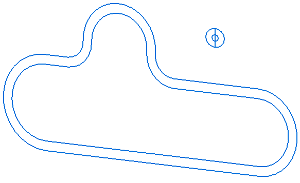
Place an Axial Align relationship between the follower and the inner track segment as shown.
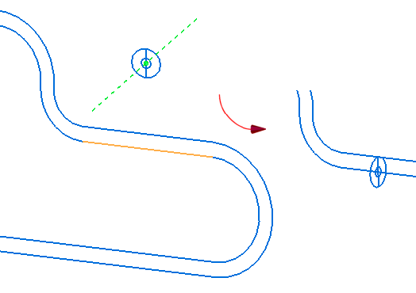
Place a Path relationship using the top vertex of the follower (1) and the edge chain on the outer track (2) using a Float option (3). Press Enter to accept the relationship.
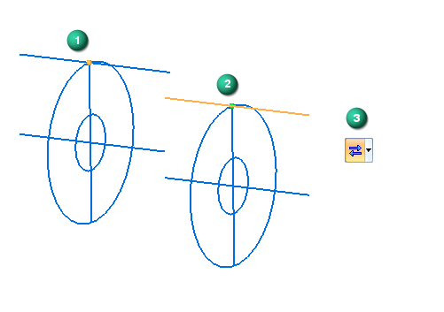
You may have to zoom into the follower and use the QuickPick option to ensure you can identify the vertex (1) of the follower sketch line.
To place the next relationship you will need to right-click anywhere in the graphics window and select the Show/Hide All Component option. Select the Show All option for Sketches and Reference Planes, and Hide All for everything else including Design Body.
Form a Planar Align relationship between the Right (yz) plane (1) of the follower part (vtmfollower.par:1) and the Front (xz) plane (2) of the track part (vmtrack.par:1).
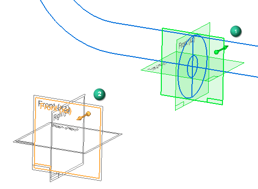
Two sets of overlapping base planes can be seen in the illustration (2). One set of planes is associated with the track part (vtmtrack.par:1) and the other set is associated with the assembly. For best practices and predictable results, always place relationships for base planes, coordinate systems, and sketches with parts in the assembly and not to assembly-level base planes, coordinate systems, or sketches. To determine what part is associated with the highlighted plane, observe which part is highlighted in the PathFinder. You can also choose to hide the assembly level Reference Planes in the PathFinder.
You can now suppress the Axial Align relationship shown in the bottom of the PathFinder because it will prevent the Variable Table Motor from operating correctly. Many times during the assembly process you will make relationships that will provide some initial alignment but that are not necessary for the final assembly. These can be suppressed or deleted.
The final assembly relationship is a Path relationship. This relationship provides the variable that is used to increment the Variable Table Motor. Using the Show/Hide All Component command, select the Show All option for Sketches and Hide All for everything else including Design Body.
Place a Path relationship using center of the follower (1) and the edge chain on the inner track (2) using the Fixed option (3).
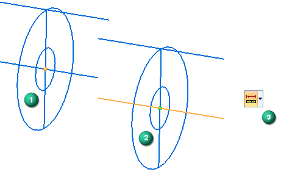
Right-click or press Enter to accept and open the Offset Value (4), Flip Side (5), and Origin Point (6) options on the Path command bar.
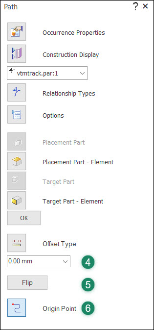
Set the Offset Value to 0.00 mm, and click on the Origin Point option to select a point on the inner track to use as the origin point for your Variable Table Motor simulation.
Click on the area of the inner track shown here to identify the Origin Point (7) to use. The follower moves to the selected point. Use the Flip Side option (5) to orient the direction arrow (8) as shown. Press Enter to accept the relationship.
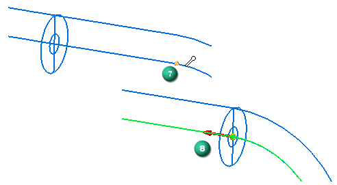
You just created four relationships. You created and suppressed an Axial Align relationship. You also created a Planar Align relationship between a reference plane of the follower and a reference plane of the track. You also created one float Path relationship, and one fixed Path relationship.
Look at the relationships in your PathFinder. They should appear as follows in the lower panel of the PathFinder when the follower (vtmfollower.par:1) is highlighted (1).
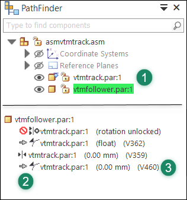
Locate variable identifier associated with the fixed Path relationship (2) . In our example the variable identifier is (V460) (3). This variable identifier is used to increment the Variable Table Motor. The one you created will have a different variable name. Make a note of the variable identifier.
Select the Variable Table Motor command (Home tab→Motors group→Variable Table Motor). This action opens the Variable Table Motor dialog.
Click on the Variable Table icon (1) to open the Variable Table. Click on the variable name associated with your fixed Path relationship. The variable name will appear in the Variable field (3) in the dialog.
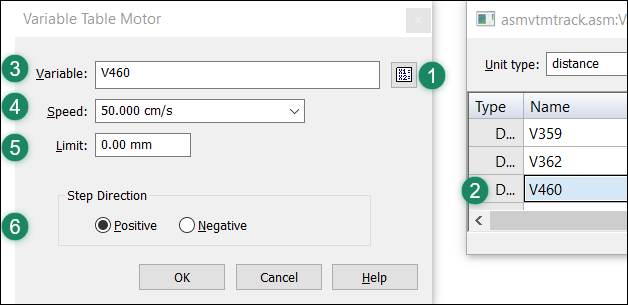
Enter a value of 50.00 cm/s in the Speed field (4). Leave the Limit field (5) set to 0.00 mm. Ensure that you set the Step Direction to Positive (6). Click OK to add your Variable Table Motor to the Motors container in the PathFinder.
Choose the Simulate Motor command (Home tab→Motors group→Simulate Motor). This action opens the Motor Group Properties dialog box.
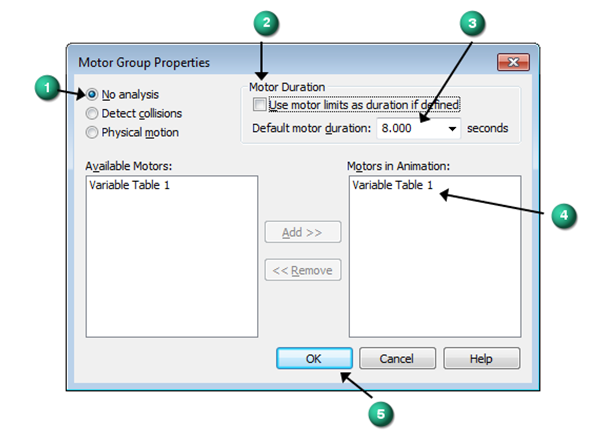
Select No analysis (1). Uncheck the Use motor limits as duration if defined option (2), and set the Default motor duration to 8.00 seconds (3). Ensure that the variable table motor you defined appears here (4) and click OK (5).
This populates the Motor Simulator with the variable table motor you defined using the parameters and options you just set. Leave the default settings on the Motor Simulator and press the Play button (1) to simulate the motor.
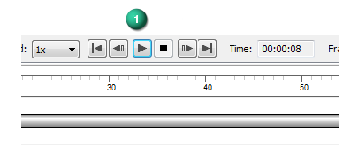
After viewing the simulation in the sketch mode, stop the simulation (press Esc), and save it when prompted.
Select the Show All option for Design Body and Hide All for everything else including Sketches.
This time when you select the Simulate Motor command, the Animation Editor opens with the animation you previously saved. Simply click the Play button to simulate the motion of the follower design body around the track design body.
In this lesson, you learned how to create and simulate a Variable Table Motor. In the activity, the following topics were covered:
-
Multiple assembly relationships were created between a follower and a track. One of those relationships was suppressed.
-
The variable associated with one of the relationships was used to create the simulation.
-
The Variable Table Motor dialog was used to identify the associated variable, the Speed of the movement, and the Step Direction.
-
The motor was added to the Animation Editor timeline while applying a duration limit.
-
The motor was animated in sketch form and design body form.